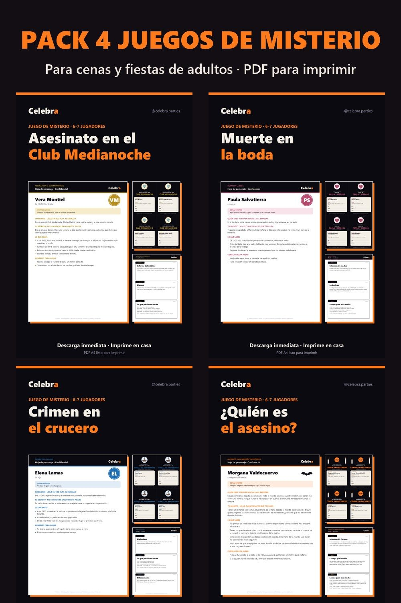

Cómo organizar una cena de misterio con amigos (y que salga perfecta)

Una cena de misterio (o *murder mystery*) es un juego en el que cada invitado interpreta a un sospechoso de un asesinato ficticio. Durante la cena salen pistas, todos se interrogan y al final cada uno acusa a quien cree culpable. Es de los planes que más se recuerdan, y montarlo en casa es más fácil de lo que parece.
1. Elige el misterio según tus invitados
- Para Halloween: una mansión, una sesión de espiritismo y un veneno. Cuanto más gótico, mejor.
- Para un cumpleaños de 30 o 40: los años 20 funcionan siempre: jazz, trajes y vestidos de flecos.
- Para una despedida o un grupo de parejas: una boda en la que algo sale muy mal.
- Para verano: un crucero y una noche de gala.
Lo ideal son 6 o 7 jugadores. Con menos, hay pocos sospechosos; con más, cuesta que todos hablen.
2. Manda las invitaciones con el personaje
Una o dos semanas antes, cada invitado recibe su invitación con su personaje y un disfraz sugerido. Es la clave: la gente llega metida en el papel.
3. Prepara la casa (sin gastar)
- Luz baja: velas LED o lámparas pequeñas.
- Música de fondo de la época (jazz de los años 20, piano antiguo…).
- Una «escena del crimen»: una copa en una mesita o un sillón vacío con una nota.
4. La cena: sencilla y que se coma de pie
Mejor picoteo que platos que obliguen a estar callados: tablas, croquetas, tortilla en taquitos… El protagonista es el juego.
5. Cómo se juega
- Presentación: el anfitrión lee la historia y cada uno presenta su personaje.
- Tres rondas de pistas: en cada ronda se leen tres pistas y hay 15–20 minutos para interrogarse, sospechar y acusar.
- Acusación final: cada jugador escribe en secreto quién fue, cómo y por qué. Se abre la solución… y empiezan las discusiones.
Regla de oro: solo el asesino puede mentir. Los demás pueden callarse sus secretos, pero no inventarse hechos.
Juegos de misterio listos para imprimir
En Celebra tienes cuatro misterios completos en PDF, con guía del anfitrión, 7 personajes con secretos, invitaciones con el personaje, 9 pistas, hoja de detective y solución:
- Asesinato en la Mansión Valdecuervo (Halloween, 1926);
- Asesinato en el Club Medianoche (años 20);
- Muerte en la boda;
- Crimen en el crucero.
Se descargan al momento y se imprimen en casa. Y con el pack de los cuatro tenéis cenas de misterio para todo el año.
Lo que sale en este artículo

Pack 4 juegos de misterio para imprimir
Club Medianoche, Muerte en la boda, Crimen en el crucero y Mansión Valdecuervo. 68 páginas

Juego «¿Quién es el asesino?» para imprimir
Asesinato en la Mansión Valdecuervo. 6-7 jugadores, +14 años, 60-90 minutos

Juego de misterio «Asesinato en el Club Medianoche»
Fin de año de 1925 en un club de jazz clandestino. 6-7 jugadores adultos, 60-90 minutos

Juego de misterio «Muerte en la boda»
Una boda en un cortijo de Sevilla. 6-7 jugadores adultos, 60-90 minutos. Perfecto para despedidas

Juego de misterio «Crimen en el crucero»
Noche de gala frente a Santorini. 6-7 jugadores adultos, 60-90 minutos